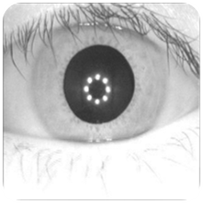
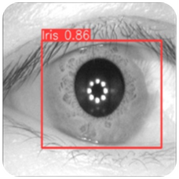
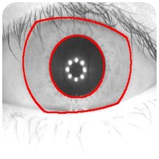
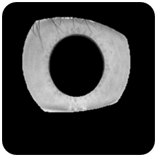
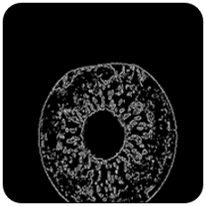
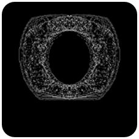

Abstract
A person only has two irises – if his pattern is stolen, he quickly runs out of alternatives. Thus methods that protect the true iris pattern need to be adopted in practical biometric applications. In particular, it is desirable to have a system that can generate a new unique pattern if the one being used is lost, or generate different unique patterns for different applications to prevent cross-matching. For backwards compatibility, these patterns should look like plausible irises so they can be handled with the same processing tools. However, they should also non-invertible hide the true biometric so it is never exposed, or even stored. Such "cancelable" biometric techniques that function with standard iris recognition systems, either at the unwrapped picture, were employed in this project.
Introduction
Cancelable biometrics serves as an effective countermeasure against various template attacks launched by intruders, safeguarding the biometric system. cancelable approach with a novel feature extraction technique for iris recognition, known as the hybrid architecture of the convolutional neural network (CNN) . To provide cancelability to the system, the project makes use of a random projection technique. The proposed method has the best outcome in terms of accurate identification. The method is validated on two Iris datasets IITD and CASIA, which show promising results on the equal error rate (EER) and accuracy. The proposed model provides 0 EER for IITD and CASIA, respectively, and accuracy 100%, for IITD and CASIA Iris dataset, respectively, which is very high compared to other methodologies. The proposed hybrid architecture is being used for a cancelable biometric system for the first time based on literature review. The efficiency of the proposed method is high when validated on the datasets.
Proposed System
-
The choice fell on the iris as biometric input in our cancelable system, The used iris database is CASIA-V4 interval that consists of 2239 images.
 -
Iris Detection using YOLO-V8, YOLO is currently the most popular real-time object detector and can be widely accepted for the following reasons: (a) lightweight network architecture, (b) effective feature fusion methods, (c) more accurate detection results.
 -
U-Net utilizes an encoder-decoder architecture. The encoder, on the left, is a typical CNN setup, similar to VGG, featuring two 3×3 convolutional layers, ReLU activation, and max pooling. Each down-sampling step doubles feature channels and halves the image resolution. The decoder, on the right, up-samples feature maps and concatenates them with corresponding encoder outputs. This ensures information flow across scales, preventing loss during down-sampling. The network's final layer is a 1×1 convolution that combines output channels to produce segmentation maps.
-
Iris Localiation using Canny edge and Iris Mask, Iris boundaries are detected by loading the image, converting it to grayscale, applying Gaussian blur, and using Canny edge detection. The edges are then dilated and resized. In the second phase, these detected boundaries are overlaid onto the original images by converting the boundary image to color, applying a binary mask, and overlaying it onto the original image.
 -
Iris segmentation extracts highlight of the iris region within each image. By leveraging OpenCV's bitwise operations, it applies these masks to the original images, effectively isolating the iris parts while discarding irrelevant information. The segmented iris images are then saved to an output directory, ensuring that only the iris regions are retained for further analysis or processing.
 -
The iris, the colored part of the eye, has a complex structure that includes various features that can be used for biometric identification, to enhance noisy remote sensing images and simultaneously extract the edges. Using the implemented Top Hat and Canny edge detector for feature extraction and as an enhancement tool for remote sensing images, the result was robust with a very high enhancement level.
 -
Combine the left and Right Iris using basic Style Transfer Method Calls a placeholder style_transfer function to perform style transfer. In the placeholder function, it simply blends the content and style images.
 -
The Pixel Shuffling technique used to create a cancelable template by creating new pixels using the new created feature maps and then rearrange the new pixels by applying the upscale technique.

Feature quantization reduces complex features from iris images for creating secure, cancelable biometric templates using K-Means clustering for quantization. The technique converts biometric data into an irreversible, protected format to prevent theft.
-
Structural Similarity Index (SSIM) is a metric used to measure the similarity between two images. It evaluates the perceived quality of an image by comparing its structural information with a reference image. The SSIM index is usually represented as a value between 0 and 1, where 1 indicates perfect similarity and vice versa.
Conclusion
In conclusion, The developed iris cancelable biometric model successfully enhances security by transforming the original iris features into a non-invertible, revocable format. This ensures that even if the transformed data is compromised, the original biometric information remains protected. The model demonstrates robust performance, maintaining high accuracy and low error rates while effectively safeguarding against potential attacks. These features make it a promising solution for secure and reliable biometric authentication systems.